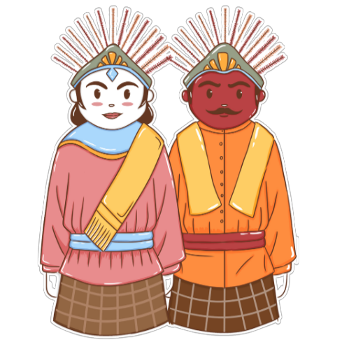

Jakarta!

Jakarta is the capital of Indonesia.
It's a big, busy city with lots of people and
different cultures. There are important places
like a national monument and a big mosque.
But sometimes, Jakarta has problems like too
much traffic and flooding. People are working
hard to make the city better. Jakarta is like the
heart of Indonesia, where lots of things happen.